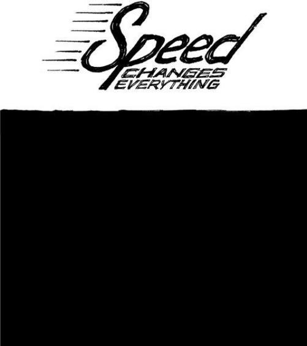

{% include JB/setup %}
{% raw %}
<div>

<h2 id="filepos221607" class="calibre19"><span class="calibre2"><a class="calibre13"></a><strong class="calibre14">Own your bad news</strong></span></h2><div class="calibre4"></div>
<p class="calibre7">When something goes wrong, someone is going to tell the story. You'll be better off if it's you. Otherwise, you create an opportunity for rumors, hearsay, and false information to spread.</p>
<p class="calibre17">When something bad happens, tell your customers (even if they never noticed in the first place). Don't think you can just sweep it under the rug. You can't hide anymore. These days, someone else will call you on it if you don't do it yourself. They'll post about it online and everyone will know. There are no more secrets.</p>
<p class="calibre17">People will respect you more if you are open, honest, public, and responsive during a crisis. Don't hide behind spin or try to keep your bad news on the down low. You want your customers to be as informed as possible.</p>
<p class="calibre17">Back in 1989, the <em class="italic1">Exxon Valdez</em> oil tanker spilled 11 million gallons of oil into Alaska's Prince William Sound. Exxon made the mistake of waiting a long time before responding to the spill and sending aid to Alaska. Exxon's chairman failed to go there until two weeks after the spill. The company held news briefings in Valdez, a remote Alaskan town that was difficult for the press to reach. The result: a PR disaster for Exxon that led the public to believe the company was either <a class="calibre16"></a>hiding something or didn't really care about what had happened.<a id="filepos223340" class="calibre16"></a><a href="Rework_split_108.html#filepos236879" class="calibre9"><sup class="calibre20"><span class="calibre6">*</span></sup></a></p>
<p class="calibre17">Contrast that Exxon story to the rupture of an Ashland Oil storage tank that spilled oil into a river near Pittsburgh around the same time. Ashland Oil's chairman, John Hall, went to the scene of the Ashland spill and took charge. He pledged to clean everything up. He visited news bureaus to explain what the company would do and answer any questions. Within a day, he had shifted the story from a rotten-oil-company-does-evil narrative to a good-oil-company-tries-to-clean-up story. <a id="filepos223981" class="calibre16"></a><a href="Rework_split_108.html#filepos237127" class="calibre9"><sup class="calibre20"><span class="calibre6">+</span></sup></a></p>
<p class="calibre17">Here are some tips on how you can own the story:</p>
<ul class="calibre23"><li class="calibre24"><p class="calibre7">The message should come from the top. The highest-ranking person available should take control in a forceful way.</p></li>
<li class="calibre24"><p class="calibre7">Spread the message far and wide. Use whatever megaphone you have. Don't try to sweep it under the rug.</p></li>
<li class="calibre24"><p class="calibre7"><a class="calibre16"></a>"No comment" is not an option.</p></li>
<li class="calibre24"><p class="calibre7">Apologize the way a real person would and explain what happened in detail.</p></li>
<li class="calibre24"><p class="calibre7">Honestly be concerned about the fate of your customers--then prove it.</p></li>
</ul><p class="calibre3"><a class="calibre16"></a></p><div class="calibre4"></div>
</div>

{% endraw %}

